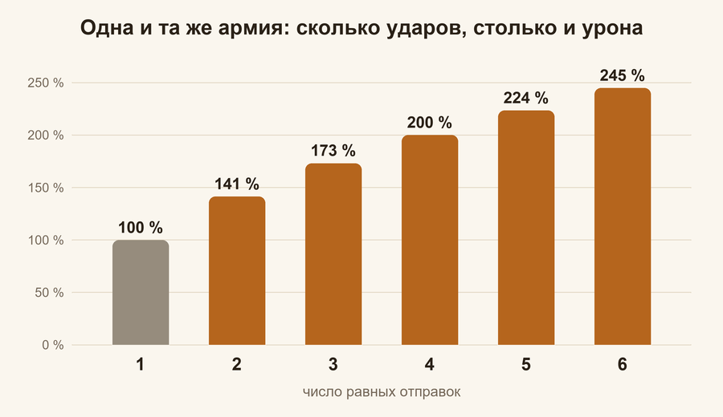
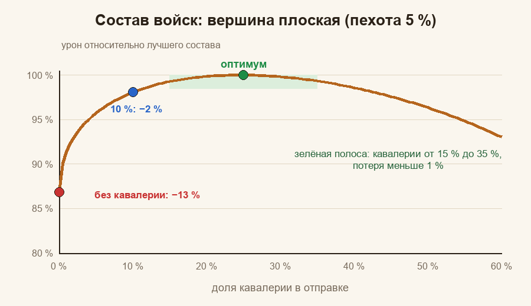
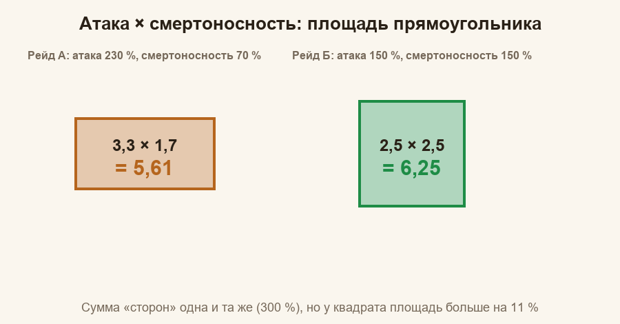
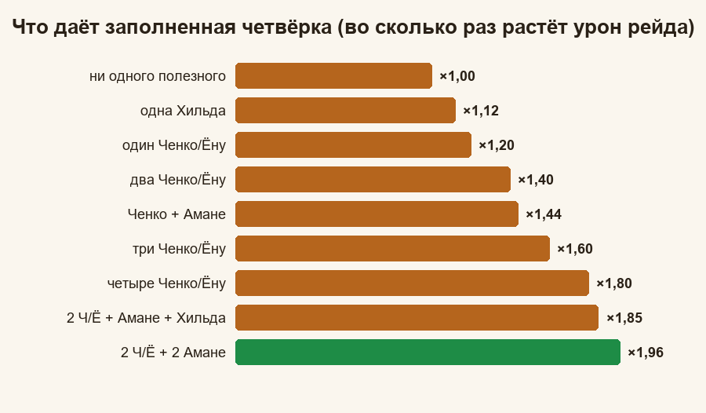

Охота на медведя: математика
Гайды: Главная · Памятка · Простыми словами · Почему так · Математика (вы здесь)
Последний уровень: формулы целиком, с выводом и числами. Уровень математики не выше девятого класса: корни, неравенство (a − b)² ≥ 0, проценты и таблицы. Если что-то непонятно, вернитесь в «Почему так»: там то же самое, но медленнее.
Содержание
- 0. Договоримся об обозначениях
- 1. Модель урона участника
- 2. Почему корень требует равных частей
- 3. Состав войск
- 4. Уровни войск и отдача типов
- 5. Атака × смертоносность
- 6. Навыки героев
- 7. Четыре места присоединившихся
- 8. Как выбрать героя: расчёт на примере
- 9. Разбор одного рейда
- 10. Как сравнить два рейда
- 11. Насколько точна модель
- 12. Задачи с решениями
- 13. Короткая шпаргалка формул
Сначала переучите войска до самого высокого доступного уровня, потом обучайте новых. Шаг уровня
u ≈ 1,19входит в урон линейно, а число солдат под корнем, поэтому переобучение на уровень выше равносильноu² ≈ 1,42по численности, не требует мест в марше и за партию в лагере охватывает примерно в 7 раз больше бойцов, чем обучение новых: вывод и сравнение по времени в п. 4, «Переучить или обучить новых?».
0. Договоримся об обозначениях#
| Символ | Что значит |
|---|---|
t | тип войск: пехота (inf), кавалерия (cav), стрелки (arc) |
N_t | число солдат типа t в отправке; N = N_inf + N_cav + N_arc |
b_t | отдача одного солдата типа t при прочих равных (подобрана по данным рейдов, см. п. 4) |
q_t | средний уровень войск типа t (по карточкам войск, Т9 = 1) |
A_t | множитель рейда для типа t из таблицы капитана (атака и смертоносность) |
S | множитель навыков (капитана и четырёх присоединившихся) |
Σ | знак суммы: Σ_t значит «сложить по трём типам» |
w_t | вклад одного «корня» типа t: w_t = b_t · q_t · A_t |
Две оговорки. Во-первых, форма формул (корень, произведения, сложение внутри вида) проверена по данным настоящих рейдов, а числа внутри (b_t, шаг уровня, вес навыков с шансом) подобраны подгонкой и известны с погрешностью; погрешности указаны. Во-вторых, абсолютный масштаб урона нам не нужен: мы сравниваем варианты между собой, и общий множитель сокращается.
1. Модель урона участника#
Урон одного участника рейда:
D = K · Σ_t [ √(N_t) · b_t · q_t · A_t ] · S
где K один и тот же для всех. Урон разных типов складывается (каждый тип наносит свой урон), внутри типа всё перемножается, а множитель навыков S умножает всю сумму. Расшифровка:
A_t = (1 + a_t + a_g) · (1 + l_t + l_g): атакаa_tи смертоносностьl_tтипа плюс общие строкиa_g,l_gиз таблицы капитана (все величины в долях: 25 % = 0,25);S = (1 + ΣA_нав) · (1 + ΣL_нав) · (1 + Σ p·x): навыки атаки складываются, навыки смертоносности складываются, средние прибавки навыков «с шансом» (p— шанс,x— прибавка) тоже складываются; три суммы перемножаются (см. п. 6). МножителиA_tиSне складываются друг с другом, а перемножаются: цифры таблицы и бонусы навыков остаются независимыми;q_t = Σ_L n_{t,L} · u^(L − 9) / N_t: средний уровень войск типа,u— шаг уровня (п. 4).
Всё вместе, с числами одного рейда, показано на карте в разделе «Разбор одного рейда» (п. 9).
Проверка структуры (на 12 игроках двух рейдов с известным составом): если брать корень от числа войск каждого типа отдельно, остаток модели около 1 %; если брать один корень от всей армии, остаток около 7 %; если брать корень по группам «тип × уровень», остаток 17–45 %. Поэтому в формуле корень стоит именно по типам.
Подобранные по данным рейдов параметры (общая подгонка по 35 рейдам, 226 игрокам; остаток около 2 %). Откуда берутся уровни и отдача, объяснено в п. 4:
| Параметр | Значение | Допустимо |
|---|---|---|
шаг уровня u (Т8→Т9, Т7→Т8 и т. д.) | 1,19 | 1,18–1,20 |
отдача стрелка b_arc | 4,4 | 4,0 × 1,1 («Дальний удар») |
отдача кавалериста b_cav | 2,6 | 2,3–2,9 |
отдача пехотинца b_inf | 1,2 | 0,8–1,4 |
отношение кавалерист / стрелок r | 0,59 | |
отношение пехотинец / стрелок r_i | 0,27 | 0,18–0,32 |
Отдача пехоты определена хуже остальных: чистых «пехотных» отправок в данных почти нет.
2. Почему корень требует равных частей#
Лемма (две части)#
Для любых неотрицательных x и y:
(√x + √y)² ≤ 2 · (x + y)
Доказательство. Раскроем скобки: x + 2√(xy) + y ≤ 2x + 2y. Перенесём всё в одну сторону: 0 ≤ x − 2√(xy) + y = (√x − √y)². Квадрат неотрицателен, неравенство верно. Равенство достигается только при x = y. ∎
Значит, разделив армию N на две части, максимум урона √x + √y получается при x = y = N/2, и равен √(2N): ровно в √2 ≈ 1,41 раза больше, чем одним ударом √N.
Много частей#
Разобьём армию на k равных частей. Урон каждой √(N/k), всего
k · √(N/k) = √k · √N
То есть урон растёт в √k раз. Значения (с учётом того, что одна отправка = 100 %):
k | 1 | 2 | 3 | 4 | 5 | 6 |
|---|---|---|---|---|---|---|
√k, % | 100 | 141 | 173 | 200 | 224 | 245 |

Прирост от каждой следующей отправки уменьшается: от первой до второй +41 пункт, от пятой до шестой +21. Но он всегда положителен, поэтому армию лучше разбить на столько отправок, сколько позволяют марши.
Рейды разной мощности#
Мощность рейда m — его итоговый множитель (таблица и навыки вместе). Пусть отправки идут в рейды с мощностями m_1, m_2, … и в отправку i уходит N_i солдат при Σ N_i = N. Нужно максимизировать Σ m_i · √N_i.
Утверждение. Σ m_i · √N_i ≤ √(Σ m_i²) · √N, и равенство достигается при N_i пропорциональных m_i².
Доказательство для двух частей (обозначим их x и y): (m_1² + m_2²)(x + y) − (m_1√x + m_2√y)² = m_1²y + m_2²x − 2m_1m_2√(xy) = (m_1√y − m_2√x)² ≥ 0. Значит, (m_1√x + m_2√y)² ≤ (m_1² + m_2²)(x + y), а равенство при m_1√y = m_2√x, то есть y/x = m_2²/m_1². Для трёх частей разность правой и левой частей равна сумме трёх таких квадратов (по одному на каждую пару частей), и вывод тот же. ∎
Пример. Рейды мощностью 1 и 1,5. Доли армии: 1 : 2,25. Сумма частей 1 + 2,25 = 3,25, поэтому доли 1 / 3,25 ≈ 0,31 и 2,25 / 3,25 ≈ 0,69, то есть 31 % и 69 %. Максимум √(1 + 2,25) · √N = 1,803 √N. Если делить поровну: (1 + 1,5) · √(N/2) = 1,768 √N. Потеря 1 − 1,768/1,803 ≈ 2 %. Поэтому небольшую разницу в мощности рейдов учитывать не стоит, а вот разница в два-три раза уже заметна.
3. Состав войск#
Оптимальные доли#
Для одной отправки максимизируем F = Σ_t w_t · √(N_t) при Σ N_t = N.
Утверждение. F ≤ √(Σ w_t²) · √N, и максимум достигается при
N_t = N · w_t² / Σ w²
Доказательство то же, что в разделе «Рейды разной мощности» (там вместо m_i стоят w_t). Значит, доля типа пропорциональна квадрату его вклада w_t.
Числа#
Если у всех типов одинаковые множители рейда (A_t равны), берём w_arc = 1, w_cav = r = 0,59, w_inf = r_i = 0,27:
| Тип | w | w² | Доля, % |
|---|---|---|---|
| стрелки | 1,00 | 1,000 | 70,4 |
| кавалерия | 0,59 | 0,348 | 24,5 |
| пехота | 0,27 | 0,073 | 5,1 |
| сумма | 1,421 | 100 |
Максимум √1,421 = 1,192 от √N. Чистые стрелки дают 1,000, то есть на 1 − 1/1,192 ≈ 16 % меньше.
Если у капитана множитель кавалерии другой, w_cav = 0,59 · A_cav / A_arc:
A_cav / A_arc | w_cav | стрелки | кавалерия | пехота |
|---|---|---|---|---|
| 0,7 | 0,41 | 80 % | 14 % | 6 % |
| 1,0 | 0,59 | 70 % | 25 % | 5 % |
| 1,3 | 0,77 | 60 % | 35 % | 4 % |
Пехота взята с w = 0,27.
Насколько страшно промахнуться#
Ценность состава относительно оптимума V = F / F_max. Считаем при w = (1 ; 0,59 ; 0,27).
Доля кавалерии при пехоте 5 %:
| Кавалерия | 0 % | 10 % | 15 % | 20 % | 25 % | 30 % | 35 % | 40 % | 50 % |
|---|---|---|---|---|---|---|---|---|---|
V, % | 86,8 | 98,1 | 99,3 | 99,9 | 100 | 99,8 | 99,3 | 98,6 | 96,3 |
Доля пехоты при кавалерии 24,5 %:
| Пехота | 0 % | 1 % | 2 % | 3 % | 5 % | 10 % | 15 % | 20 % |
|---|---|---|---|---|---|---|---|---|
V, % | 97,4 | 99,2 | 99,6 | 99,9 | 100 | 99,6 | 98,5 | 97,1 |
Готовые составы:
| Состав (пех / кав / стр) | V, % |
|---|---|
| 3 / 28 / 69 | 99,8 |
| 2 / 23 / 75 | 99,6 |
| 10 / 10 / 80 | 97,8 |
| 0 / 0 / 100 | 83,9 |

Почему вершина плоская: вблизи максимума потеря растёт как квадрат отклонения (в точке максимума любая гладкая кривая похожа на параболу). Отклонение в 10 п. п. даёт потерю порядка 0,7–1 %, а при 5 п. п. около 0,2 %. Зато «ноль» кавалерии или пехоты уводит далеко от вершины, потому что корень вблизи нуля растёт круче всего (это тот же эффект, что в «первая тысяча важнее десятой»).
4. Уровни войск и отдача типов#
Что показывают карточки войск#
В карточке войск («Конный двор», «Казармы», «Стрельбище») у каждого уровня есть показатели одного солдата: Сила, Атака, Защита, Здоровье, Смертоносность, Скорость, Загрузка. Для урона по медведю важны атака и смертоносность, а урон солдата растёт вместе с их произведением. Из карточек:
| Уровень | Стрелки: А / С = А×С | Кавалерия: А / С = А×С | Пехота: А / С = А×С |
|---|---|---|---|
| Т5 | 9 / 10 = 90 | 8 / 9 = 72 | 5 / 5 = 25 |
| Т6 | 10 / 11 = 110 | 9 / 10 = 90 | 6 / 6 = 36 |
| Т7 | 11 / 12 = 132 | 10 / 11 = 110 | 7 / 7 = 49 |
| Т8 | 12 / 13 = 156 | 11 / 12 = 132 | 8 / 8 = 64 |
| Т9 | 13 / 14 = 182 | 12 / 13 = 156 | 9 / 9 = 81 |
| Т10 | 14 / 15 = 210 | 13 / 14 = 182 | 10 / 10 = 100 |
Шаг между соседними уровнями (отношение произведений):
| Шаг | Стрелки | Кавалерия | Пехота |
|---|---|---|---|
| Т7 → Т8 | 1,18 | 1,20 | 1,31 |
| Т8 → Т9 | 1,17 | 1,18 | 1,27 |
| Т9 → Т10 | 1,15 | 1,17 | 1,23 |
(Т10 по карточке, в боях не проверялось. Параметр «Сила» в расчёте не участвует.)
Реальные рейды дают общий шаг u = 1,19 для всех уровней: он совпадает с шагами стрелков и кавалерии. У пехоты по карточкам шаг больше, но пехоты в составах мало, и отдельно для неё это не проверялось.
Средний уровень войск типа считаем так: если у вас n_L солдат уровня L (IX = 9), то
q = Σ_L n_L · u^(L − 9) / N, u = 1,19
Например, 9 000 войск Т9 и 1 000 Т8 дают q = (9000 + 1000/1,19)/10 000 = 0,984.
Откуда берётся отдача типа#
Отношение отдачи типов игра нам числом не показывает. Есть три оценки, и они сходятся по порядку, а по размеру немного расходятся. Остаток считался на 35 рейдах и 226 игроках, уровни во всех строках по шагу u = 1,19:
| Оценка | Стрелок | Кавалерист | Пехотинец | Остаток |
|---|---|---|---|---|
наши измерения (подгонка по рейдам), b = 4,4 : 2,6 : 1,2 | 1,00 | 0,59 | 0,27 | 2,0 % |
публичный калькулятор Frakinator, 4,84 : 3,0 : 1,0 | 1,00 | 0,62 | 0,21 | 2,3 % |
карточки Т9, 182 : 156 : 81, стрелкам +10 % («Дальний удар») | 1,00 | 0,78 | 0,40 | 2,9 % |
| карточки Т9 без бонуса стрелков | 1,00 | 0,86 | 0,45 | 3,0 % |
Если и уровни брать прямо из карточек (а не по шагу 1,19), остаток при отдаче по карточкам растёт до 4,2 %. Поэтому в расчёте стоят наши измерения. Почему они отличаются от карточек, мы не знаем: формулу боя игра не показывает, а карточка показывает не всё, что влияет на урон. Числа определены с погрешностью (кавалерия 0,52–0,66, пехота 0,18–0,32).
Что будет, если оценка неточна. Для каждой оценки w_t² даёт свой лучший состав (п. 3). Потеря урона от состава 5 / 25 / 70 (пехота / кавалерия / стрелки), если верна именно эта оценка:
| Верная оценка | Лучший состав | Потеря при 5 / 25 / 70 |
|---|---|---|
| наши измерения | 5 / 25 / 70 | 0 % |
| калькулятор | 3 / 27 / 70 | 0,1 % |
| карточки (+10 % стрелкам) | 9 / 34 / 57 | 1,1 % |
| карточки без бонуса | 10 / 38 / 52 | 1,8 % |
Не больше 1,8 %, то есть выбор оценки на практике мало что меняет.
Если нужна таблица для каждого уровня и типа, вот значения модели относительно стрелка Т9 (b_t · u^(L − 9) от b_arc):
| Тип | Т5 | Т6 | Т7 | Т8 | Т9 |
|---|---|---|---|---|---|
| Стрелки | 0,50 | 0,59 | 0,71 | 0,84 | 1,00 |
| Кавалерия | 0,29 | 0,35 | 0,42 | 0,50 | 0,59 |
| Пехота | 0,13 | 0,16 | 0,19 | 0,23 | 0,27 |
Отправлять ли слабых?#
Сравним N сильных (уровень 1) и N сильных плюс Δ слабых (уровень s < 1):
(N + sΔ)/√(N + Δ) против √N
Прирост есть, если (N + sΔ)² > N(N + Δ), то есть 2Ns + s²Δ > N, откуда при Δ, малом против N, получаем s > 1/2. Добавлять слабый уровень выгодно, пока он не слабее примерно вдвое: при шаге 1,19 для армии Т9 это даже Т5 (1,19^(−4) ≈ 0,5). Выгода уменьшается, но остаётся.
Пример: 9 000 Т9 + 1 000 Т8: все 10 000 дают √10 000 · 0,984 = 98,4; только Т9: √9 000 = 94,9; 10 000 Т9 было бы 100. Слабая тысяча даёт +3,7 % к урону армии без неё (98,4 против 94,9).
Переучить или обучить новых?#
Переучивание на уровень выше умножает q на u = 1,19. Чтобы получить тот же прирост урона увеличением N, надо √(N'/N) = 1,19, то есть N'/N = 1,19² = 1,416: около +42 % солдат. При этом переучивание не требует лишних мест в марше.
А что по времени? Партия обучения или переобучения в лагере занимает одно и то же время. Например, за партию можно обучить 653 бойцов Т9 или переучить 4 753 бойцов с Т8 на Т9. Отношение 4 753 / 653 ≈ 7,3 одинаково: скорость обучения действует на обучение и переобучение одинаково. Значит, за то же время можно переучить 7,3 бойца или обучить одного нового Т9. Сравним на большой армии из Т8 (q = 1/1,19 = 0,84, сумма уровней Q = 0,84 N). Урон D ∝ Q / √N, поэтому относительный прирост при добавке ΔQ к сумме уровней и ΔN к числу бойцов равен ΔQ / Q − ΔN / (2N):
- один новый Т9:
ΔQ = 1,ΔN = 1, прирост1/(0,84 N) − 1/(2N) = (1,19 − 0,5) / N = 0,69 / N; - 7,3 переученных:
ΔQ = 7,3 × 0,16 = 1,17,ΔN = 0, прирост1,17/(0,84 N) = 1,39 / N.
Переучивание в два раза эффективнее по времени. Ресурсы тоже считаются разностью цен уровней, так что и по ним оно не проигрывает.
5. Атака × смертоносность#
A = (1 + a)(1 + l), где a, l — суммарные атака и смертоносность типа (с общими строками), в долях.
Ровное лучше перекошенного#
Положим p = 1 + a, q = 1 + l. При фиксированной сумме p + q произведение наибольшее при p = q, потому что
(p + q)² / 4 − pq = (p − q)² / 4 ≥ 0
Пример: атака 230 %, смертоносность 70 %: 3,3 × 1,7 = 5,61; по 150 %: 2,5 × 2,5 = 6,25. Разница +11,4 %.

Куда добавлять#
Если добавить δ к p, произведение вырастет на δ · q; если к q, то на δ · p. Значит, выгоднее добавлять к той стороне, у которой «соседка» больше, то есть к меньшей стороне. Пример с p = 3,3, q = 1,7 и δ = 0,1: к q прибавка 0,1 · 3,3 = 0,33 (+5,9 %), к p: 0,1 · 1,7 = 0,17 (+3,0 %).
6. Навыки героев#
Походные навыки капитана и первого героя присоединившегося:
- у героев-SSR три навыка, у SR и R два;
- атака и смертоносность растут на +5 % за уровень (до +25 % на пятом); у Хильды +3 % за уровень (до +15 %);
- навыки бывают трёх видов (атака, смертоносность, «с шансом»); внутри вида складываем, суммы видов перемножаем:
S = (1 + Σ прибавок атаки) · (1 + Σ прибавок смертоносности) · (1 + Σ p·x)
Множитель навыков S и множитель таблицы A_t не складываются между собой, а перемножаются.
Навыки «с шансом»#
Если навык срабатывает с вероятностью p и усиливает урон на долю x, его средняя прибавка равна p · x. Куинн: p = 0,5, x = 0,5, прибавка 0,25. Амадей, «Нечестный удар»: p от 0,08 до 0,40 по уровням, x = 0,5, на 5 уровне прибавка 0,20. Навыки «с шансом» складываются между собой: 1 + Σ p·x.
Проверка вариантов. На 23 рейдах с прочитанными навыками капитана и четырёх мест присоединившихся мы смотрели, насколько постоянно отношение «масштаб рейда / множитель навыков»: чем меньше разброс, тем лучше вариант описывает данные.
| Как учтены навыки «с шансом» | Разброс |
|---|---|
| никак (учтены только атака и смертоносность) | 20,7 % |
складываются между собой, 1 + Σ p·x | 6,4 % |
| перемножаются между собой, с поправкой 0,8 на каждый | 6,1 % |
| перемножаются без поправки | 7,4 % |
| добавляются к сумме атаки или смертоносности | 8,1–8,6 % |
| все прибавки в одной общей сумме | 13,2 % |
| навыки не учтены вообще | 35,2 % |
Разница между 6,4 % и 6,1 % на 23 рейдах статистически незаметна. Выбран вариант «складываются, без поправки»: он в точности соответствует среднему значению (шанс на прибавку), а подогнанной поправки в нём нет.
Случайность тоже настоящая: у лучников есть «Залп» (шанс 10 %, что атака поражает дважды), и между рейдами с одинаковыми цифрами урон расходится на 6–9 %. Эта разница общая для всех участников одного рейда: в одном рейде у всех «повезло» или «не повезло» вместе.
7. Четыре места присоединившихся#
Правило отбора. Берётся первый правый навык первого героя каждого присоединившегося, навыки сортируются по ключу (уровень навыка по убыванию, затем позиция участника в списке рейда сверху вниз), верхние четыре начинают действовать. Значит, навык 5 уровня может уступить место только другому навыку 5 уровня, владелец которого стоит выше в списке.
Пустое первое место. Если присоединившийся убрал героя с первого места, от него в отбор не попадает ни один навык: герой со второго места первым не считается. Вместимость его марша C = C_0 + Σ_h c_h по оставшимся героям, где C_0 ≈ 69 000 базовая, а c_h ≈ 13 000 у героя высокого уровня: с двумя героями около 95 000 против 108 000 с тремя и 69 000 без героев. Это способ не занимать место бесполезным навыком ценой одного слагаемого c_h.
Вклад четвёрки. Пусть у капитана суммы атаки и смертоносности навыков S_a, S_l, а четвёрка присоединившихся добавляет Σa и Σl. Рост урона всего рейда:
M = (1 + S_a + Σa)(1 + S_l + Σl) / ((1 + S_a)(1 + S_l))
Положим S_a = S_l = 0,25 (по одному навыку каждого вида на 5 уровне). Базовый множитель 1,25 × 1,25 = 1,5625.
| В четырёх местах | (1 + S_a + Σa) | (1 + S_l + Σl) | Произведение | M |
|---|---|---|---|---|
| ничего полезного | 1,25 | 1,25 | 1,5625 | 1,00 |
| одна Хильда | 1,40 | 1,25 | 1,750 | 1,12 |
| одна Ченко (или Ёну) | 1,25 | 1,50 | 1,875 | 1,20 |
| две Ченко/Ёну | 1,25 | 1,75 | 2,1875 | 1,40 |
| Ченко + Амане | 1,50 | 1,50 | 2,250 | 1,44 |
| три Ченко/Ёну | 1,25 | 2,00 | 2,500 | 1,60 |
| четыре Ченко/Ёну | 1,25 | 2,25 | 2,8125 | 1,80 |
| две Ченко/Ёну + Амане + Хильда | 1,65 | 1,75 | 2,8875 | 1,85 |
| две Ченко/Ёну + две Амане | 1,75 | 1,75 | 3,0625 | 1,96 |
| то же, но все навыки на 4 уровне | 1,65 | 1,65 | 2,7225 | 1,74 |
Амадей считается как Ченко/Ёну: его первый правый навык добавляет к Σl те же 0,25.
Зои («Рваная рана») и Марлин («Человек-стихия») на месте присоединившегося приносят навык «с шансом»: он идёт не в Σa или Σl, а в третью скобку (1 + Σ p·x) (п. 6), поэтому в таблице их нет. По вкладу каждая сопоставима с Хильдой, а в отдельном рейде результат отличается от среднего на 6–9 %.

Из таблицы видно три вещи.
- Относительно рейда без присоединившихся прирост линеен. Каждая Ченко добавляет к сумме
0,25, то есть к исходным1,25по одной пятой:+20 %,+40 %,+60 %,+80 %. Если же считать от предыдущего шага, прирост тает: первая даёт1,50/1,25 = ×1,20, вторая1,75/1,50 = ×1,17, третья2,00/1,75 = ×1,14, четвёртая2,25/2,00 = ×1,125. Каждая следующая «разбавляется» всё большей суммой. - Разные виды перемножаются. Поэтому две атаки и две смертоносности (
×1,96) лучше четырёх смертоносностей (×1,80): это та же история с прямоугольником. - Чем больше навыков у самого капитана, тем меньше прибавка. Одна Ченко при
S_l = 0даёт×1,25, при0,25×1,20, при0,5×1,17.
Какой набор навыков нужен именно этому рейду#
Набор «две смертоносности и две атаки» лучший только при S_a = S_l. В общем случае при четырёх занятых местах нужно распределить их между видами так, чтобы выровнять две суммы. Это та же задача про прямоугольник: сумма сторон (1 + S_a + Σa) + (1 + S_l + Σl) = 2 + S_a + S_l + 1 при заполненных местах постоянна, а произведение наибольшее, когда стороны равны.
Пусть k из четырёх мест занимают навыки смертоносности (Ченко, Ёну, Амадей), а остальные 4 − k навыки атаки (Амане). Тогда стороны 1 + S_a + 0,25(4 − k) и 1 + S_l + 0,25k. Равенство даёт k = 2(1 + S_a − S_l).
Пример: у капитана S_a = 0,5 (два навыка атаки), S_l = 0,25. Тогда k = 2,5:
k (навыков смертоносности) | 0 | 1 | 2 | 3 | 4 |
|---|---|---|---|---|---|
| сторона атаки | 2,50 | 2,25 | 2,00 | 1,75 | 1,50 |
| сторона смертоносности | 1,25 | 1,50 | 1,75 | 2,00 | 2,25 |
| произведение | 3,125 | 3,375 | 3,500 | 3,500 | 3,375 |
M (к базе 1,875) | 1,67 | 1,80 | 1,87 | 1,87 | 1,80 |
Лучше всего два-три навыка смертоносности. А если бы у капитана было вовсе нет навыков смертоносности (S_l = 0) при S_a = 0,5, оптимум сдвинулся бы к k = 3. Вывод: набор у каждого рейда свой. Для присоединяющегося из этого следует практическое правило: смотрите навыки капитана и четыре места, и добавляйте тот вид, где сумма меньше (в примере это смертоносность, то есть Ченко, Ёну или Амадей).
Влияет ли таблица? В нашей модели нет. Таблица образует свой множитель A (скобки с a и l), навыки образуют другой множитель S, а A и S перемножаются как независимые. Поэтому «слабая смертоносность в таблице» не заставляет брать больше навыков смертоносности: навыки выравнивают именно суммы навыков. Оговорка: по данным рейдов модель с отдельным S описывает урон хорошо (ошибка около 2 %), но вариант «навыки и таблица складываются в одну сумму» мы не проверяли отдельно.
Порядок в списке участников#
В лобби рейда стрелка справа в строке участника раскрывает его войска, а кнопка со стрелкой вверх в раскрытой строке переносит участника на верх списка, сразу под капитана. Нажимать её может только капитан. Позиция в списке — второй ключ сортировки: она решает только среди навыков одного уровня. Перестановка влияет только на порядок навыков того же уровня, что и у перемещаемого игрока: навык уровня L нельзя поднять над навыком уровня L' > L, но среди навыков уровня L его место определяется позицией. Пример: два навыка 5 уровня и пять навыков 4 уровня на четыре места. Пятые займут два места, на два оставшихся капитан выбирает среди четвёртых, а поднятый наверх игрок с навыком 4 уровня пятые не обойдёт. Если же навыков 5 уровня пять, поднятый наверх игрок с таким навыком попадёт в четвёрку, а нижний из пятых выйдет.
8. Как выбрать героя: расчёт на примере#
Цифры героя в таблице (блок «Экспедиция») зависят от его звёзд, уровня и снаряжения. Поэтому герой оценивается по актуальной таблице вашего рейда и по навыкам, а эксклюзивное снаряжение SSR-героя учитывается отдельно, если его прокачка ещё изменится.
Шаг 1. Таблица#
Таблицы одного и того же рейда, в котором по очереди стояли Куинн и Соул. Общие строки: a_g = 0,423, l_g = 0,295.
| Куинн | Соул | |
|---|---|---|
атака стрелков a_t | 1,963 | 1,814 |
смертоносность стрелков l_t | 1,806 | 1,856 |
A_arc = (1 + a_t + a_g)(1 + l_t + l_g): у Куинна 3,386 × 3,101 = 10,50, у Соула 3,238 × 3,151 = 10,20. Отношение 10,20 / 10,50 = 0,972. Смертоносность у Соула выше на 0,05 из-за «Кроличьей пушки» уровня +1, атака ниже из-за звёзд и уровня героя.
Стрелки дают около σ = 0,70 всего урона, поэтому для всего урона получаем
1 + σ · (0,972 − 1) = 0,980
Шаг 2. Навыки#
Соул: S_l растёт на 0,25 (на 4 уровне на 0,20). Куинн: навык «с шансом», прибавка p · x = 0,5 × 0,5 = 0,25. Пусть S_l — сумма остальных навыков смертоносности, а Σ — сумма остальных «шансовых» прибавок. Часть множителя навыков, зависящая от героя стрелков:
- с Соулом
(1 + S_l + 0,25) · (1 + Σ); - с Куинном
(1 + S_l) · (1 + Σ + 0,25).
Отношение «Соул к Куинну»:
(1 + S_l + 0,25) / (1 + S_l) · (1 + Σ) / (1 + Σ + 0,25)
Берём S_l = 0,20:
| Что ещё есть в рейде | Расчёт | Навыки |
|---|---|---|
других «шансовых» навыков нет, Σ = 0 | 1,45 / 1,20 × 1,00 / 1,25 = 1,208 × 0,800 | 0,967 |
Явель и Зои, Σ = 0,20 + 0,25 = 0,45 | 1,208 × 1,45 / 1,70 = 1,208 × 0,853 | 1,031 |
Навык «с шансом» даёт p · x в среднем на дистанции: в одном рейде результат отличается на 6–9 % (п. 6). Поэтому сравнение верно для «в среднем», а не для каждого отдельного рейда.
Шаг 3. Итог#
Итог равен произведению таблицы и навыков:
| Что ещё есть в рейде | Таблица | Навыки | Итог (Соул к Куинну) |
|---|---|---|---|
| нет других «шансовых» навыков | 0,980 | 0,967 | 0,948: Куинн впереди примерно на 5 % |
| Явель и Зои | 0,980 | 1,031 | 1,010: Соул впереди примерно на 1 % |
Шаг 4. Что даст прокачка «Кроличьей пушки»#
На экране снаряжения видно, что пушка даёт в «Показателях экспедиции» смертоносность стрелков +5 % на уровне +1 и +50 % на максимальном уровне +10 (и столько же здоровья стрелков, но здоровье для медведя не нужно).

В таблице Соула сейчас учтено +0,05. При +10 добавится ещё +0,45. У Соула l_t + l_g = 1,856 + 0,295 = 2,151:
f = (1 + 2,151 + 0,45) / (1 + 2,151) = 3,601 / 3,151 = 1,143
Для всего урона: 1 + σ · (f − 1) = 1 + 0,70 × 0,143 = 1,10. Итог умножается на 1,10: 0,948 × 1,10 = 1,04 и 1,010 × 1,10 = 1,11. Соул впереди на 4 % и на 11 %.
У Куинна своё эксклюзивное снаряжение: смотрите его в карточке и считайте так же. Данных по нему у нас нет.
Выводы#
Исход зависит от того, что уже есть в рейде (сколько «шансовых» навыков, сколько смертоносности) и от прокачки героев. Считайте по своей таблице и своим навыкам: арифметика та же, только цифры ваши.
9. Разбор одного рейда#
Сложим всё в один пример. Карта ниже показывает формулу для одного участника: что складывается (синие плюсы), что перемножается (оранжевые крестики), откуда берутся числа.

Исходные данные. Таблица «Бонус войск (от капитана)»: общие строки a_g = 0,474, l_g = 0,255; пехота 1,888 / 1,471, кавалерия 2,134 / 1,416, стрелки 1,946 / 1,045 (атака / смертоносность в долях). Армия: 10 000 войск Т9 в одной отправке, состав 500 пехоты, 2 500 кавалерии и 7 000 стрелков. Навыки: у капитана по одному навыку атаки и смертоносности (+0,25 и +0,25), у присоединившихся две Амане (атака +0,50) и две Ченко (смертоносность +0,50), плюс «шансовый» навык Куинна (p · x = 0,5 × 0,5 = 0,25).
Шаг 1. Множители таблицы A_t:
| Тип | 1 + a_t + a_g | 1 + l_t + l_g | A_t |
|---|---|---|---|
| пехота | 3,362 | 2,726 | 9,165 |
| кавалерия | 3,608 | 2,671 | 9,637 |
| стрелки | 3,420 | 2,300 | 7,866 |
Шаг 2. Урон каждого типа до навыков √N · b · q · A (q = 1):
| Тип | √N | b | A | Результат |
|---|---|---|---|---|
| пехота | 22,36 | 1,2 | 9,165 | 246 |
| кавалерия | 50,00 | 2,6 | 9,637 | 1 253 |
| стрелки | 83,67 | 4,4 | 7,866 | 2 896 |
| сумма | 4 394 |
Шаг 3. Множитель навыков:
S = (1 + 0,25 + 0,50) × (1 + 0,25 + 0,50) × (1 + 0,5 × 0,5) = 1,75 × 1,75 × 1,25 = 3,83
Шаг 4. Итог:
D = 4 394 × 3,83 ≈ 16 822
Это условные очки: сравнивать их можно только между собой.
Что можно «покрутить» на этом примере:
- Присоединившиеся. Без четырёх мест (
S = 1,25 × 1,25 × 1,25 = 1,95) было бы8 583. Четыре места дали×1,96. - Отправки. Эту же армию тремя равными отправками:
×√3 = 1,73, итого около29 137. - Состав. Для этого капитана
w_t = b_t · A_t: пехота 11,00; кавалерия 25,06; стрелки 34,61. Квадраты 121,0; 627,8; 1 197,9, сумма 1 946,7. Доли: пехота 6,2 %, кавалерия 32,3 %, стрелки 61,5 %. Максимум√1 946,7 × 100 = 4 412. Наш состав 5 / 25 / 70 даёт4 394, то есть99,6 %от максимума: потеря в 0,4 % не стоит возни. Но видно, что у этого капитана кавалерии в оптимуме больше обычного: таблица кавалерии у него сильнее таблицы стрелков.
10. Как сравнить два рейда#
Для одной таблицы капитана множитель стрелков A_arc и общий множитель рейда определяются прежде всего смертоносностью: у капитанов атака отличается мало, а смертоносность в разы. В числах: атака 190 % против 200 % даёт 2,9 против 3,0 (разница 3,4 %), а смертоносность 70 % против 130 % даёт 1,7 против 2,3 (разница 35 %).
Проверка: для 30 таблиц реальных рейдов мы сравнили порядок по «Смертоносности стрелков» (с добавлением общей «Смертоносности войск») и порядок по точному расчёту. Коэффициент ранговой корреляции Спирмена ρ = 0,95. Для сравнения порядок по «Силе» капитана (параметр из карточки игрока) даёт ρ ≈ 0,5: пользоваться им нельзя.
Ограничение: навыки героев в таблицу не входят, они вносят множитель S. Если у двух рейдов смертоносность почти одна, смотрите на навыки капитана и на четыре места присоединившихся.
11. Насколько точна модель#
- Остаток модели (отношение предсказанного урона к фактическому): стандартное отклонение около
2 %на общей выборке (1,8–2,0 % в зависимости от тонкой настройки уровней). - Около 85 % игроков укладываются в
±2 %. - Между рейдами с одинаковыми цифрами из-за случайности расхождение
6–9 %, одно и то же для всех участников конкретного рейда. - Значит, различия меньше 2–3 % в расчётах искать не нужно: они тонут в шуме.
Что не проверено#
- Т10: по карточкам войск шаг уровня Т9→Т10 примерно
+15 %(стрелки),+17 %(кавалерия),+24 %(пехота), но в боях это не проверялось. - Отдача пехоты
b_infопределена косвенно (1,2 ± 0,2). - Сложение или умножение общей и типовой частей
A_t: данные не различают, на выводы это не влияет. - «Шансовые» навыки: сумма (без поправки) и произведение (с поправкой 0,8) описывают 23 рейда одинаково хорошо (6,4 % против 6,1 %); выбрана сумма как более простая.
- Отдача типов: механизм, по которому получается отношение 1,00 : 0,59 : 0,27, нам неизвестен. Три оценки (п. 4) дают состав, отличающийся не более чем на 1,8 % по урону.
- Независимость
AиS: модель с отдельным множителем навыков описывает рейды хорошо, но вариант «таблица и навыки складываются в одну сумму» отдельно не проверялся. - Эксклюзивное снаряжение: расчёт для «Кроличьей пушки» сделан по числам экрана снаряжения, не по боям.
12. Задачи с решениями#
Ответы спрятаны: нажмите на замазанный текст, чтобы открыть.
- Армия 20 000 солдат одного типа, четыре марша. Во сколько раз урон больше, чем одной отправкой?
√4 = 2, в два раза. - Рейды мощностью 1, 2 и 3. Как разделить 14 000 солдат? Доли пропорциональны
1 : 4 : 9, всего14частей: по 1 000, 4 000 и 9 000 солдат. - У капитана кавалерия на 30 % сильнее стрелков (
A_cav / A_arc = 1,3). Какова оптимальная доля кавалерии приr_i = 0,27?w_cav = 0,59 × 1,3 = 0,767,w² = 0,588; сумма1 + 0,588 + 0,073 = 1,661; доля0,588 / 1,661 = 35 %. - Рейд А: атака 250 %, смертоносность 30 %. Рейд Б: по 140 %. Суммы одинаковые (280). Кто сильнее? А:
3,5 × 1,3 = 4,55; Б:2,4 × 2,4 = 5,76. Рейд Б сильнее на 27 %: перекос дорого обходится. - Капитан: один навык атаки +25 % и один смертоносности +25 %. Присоединились Амане и Ёну (оба 5 уровня). Насколько вырос урон рейда?
(1 + 0,25 + 0,25)(1 + 0,25 + 0,25) / 1,5625 = 2,25 / 1,5625 = 1,44. На 44 %. - Армия: 6 000 Т9 и 4 000 Т8. Какой средний уровень и какова потеря против 10 000 Т9?
q = (6000 + 4000/1,19)/10 000 = 0,936, урон0,936 × 100 = 93,6: потеря 6,4 %. - У капитана навыки атаки дают
+0,75, смертоносности+0,25. Приходит либо Ченко, либо Амане. Кто полезнее? Базовый множитель1,75 × 1,25 = 2,1875. С Ченко:1,75 × 1,50 = 2,625, то есть×1,20. С Амане:2,00 × 1,25 = 2,50, то есть×1,14. Полезнее Ченко: смертоносность была слабее.
13. Короткая шпаргалка формул#
| Что | Формула |
|---|---|
| урон участника | D = K · Σ_t √N_t · b_t · q_t · A_t · S |
| множитель таблицы типа | A_t = (1 + a_t + a_g)(1 + l_t + l_g) |
| множитель навыков | S = (1 + ΣA)(1 + ΣL)(1 + Σ p·x) |
k равных отправок | √k раз |
рейды мощностью m_i | доли ∝ m_i², максимум √(Σ m²) · √N |
| состав | доли ∝ w_t², w_t = b_t · q_t · A_t |
| переучивание на уровень выше | u² = 1,42 (≈ +42 % солдат), по времени вдвое эффективнее обучения |
| четыре места | M = (1 + S_a + Σa)(1 + S_l + Σl) / ((1 + S_a)(1 + S_l)) |
| набор навыков присоединившихся | выравнивать суммы: k = 2(1 + S_a − S_l) навыков смертоносности из четырёх |
Если нашли в формулах ошибку, значит, медведь здесь ни при чём.